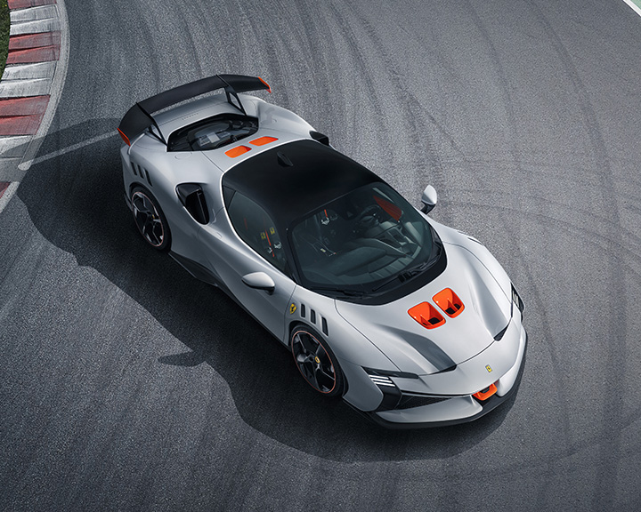

Ferrari SF90 XX Stradale
Ferrari’s Special Version cars push the performance of its production models to new extremes. Some, such as the 488 Pista and 812 Competizione, have earned a rightful place in the Prancing Horse’s recent pantheon. Ferrari’s ‘XX Programme’, on the other hand, offers a select group of expert client drivers extreme cars that are not homologated for the road, to drive on the very limit on the track. One such model is the FXX-K EVO. Ferrari has now drawn on these two different spheres of experience to create a Special Version that draws on the programme’s concepts to make it effectively a road-legal XX: the SF90 XX Stradale. Its performance has been raised to impressive new heights by an additional 30 cv, specific software logics and the use of radical new aero solutions, not least a fixed rear wing, the first to appear on a road-going Ferrari since the days of the F50.


The focus with the SF90 XX Stradale’s development was to produce the most high-performance Ferrari road car ever that also delivered superb fun behind the wheel, as well as fully retaining all of the functionalities of the SF90 Stradale’s hybrid powertrain. Also of major importance was usability of performance, particularly the electric mode’s ability to deliver surprisingly high performance driving both in urban settings and all the way up to out-of-town trips – the top speed in eDrive mode is 135 km/h. Another major new addition is the ABS EVO controller, which debuted on the 296 GTB and, thanks to its integration with the ESC sensor, improves both performance and repeatability in high performance braking in the dry. The system maximises the repeatability of the braking manoeuvre to a target value, reducing losses due to the tolerances of the components or the natural variability of test conditions.